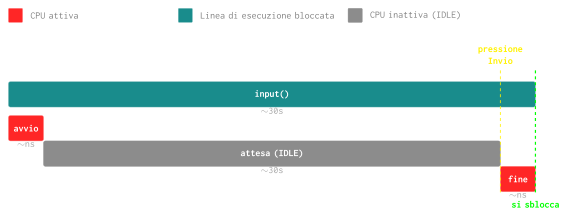

Operazioni I/O: Linea di esecuzione bloccata
Definiremo qui cosa si intende con linea di esecuzione bloccata.
Per farlo partiremo dalla funzione input() nell'esempio precedente.
Funzione input()
La funzione input() di python è una operazione di I/O molto semplice, essa permette all'utente di digitare una stringa da tastiera e aspetta fino a quando non si preme il tasto Invio.
Cosa significa quell'aspetta? Significa che:
- La funzione
inpututilizza la CPU solo all'inizio. - Non utilizza la CPU fino a quando non viene premuto il tasto Invio.
- Ri-usa la CPU per ritornare l'output arrivato dalla tastiera in fase conclusiva.
Riprendendo l'esempio precedente, la prossima linea ad essere eseguita sarà la linea #1:
Questo significa che per \(N\) secondi (fintanto che non verrà premuto Invio) avremo la seguente situazione senza però che la CPU venga effettivamente utilizzata:
Diagramma di Gantt
Qui di seguito mostriamo il diagramma di Gantt dell'utilizzo della CPU durante l'esecuzione della linea #1:
- La prima riga descrive la finestra temporale di esecuzione della funzione (30 secondi).
- La seconda riga mostra il tempo di utilizzo della CPU:

E traiamo le seguenti importanti conclusioni:
- La linea di esecuzione è bloccata fintanto che l'utente non preme Invio.
- Il tempo di utilizzo della CPU è minimo rispetto al tempo di esecuzione della linea.
Conclusione
Linea di esecuzione BLOCCATA
Una linea di esecuzione è bloccata quando:
- Lo sbocco avviene tramite un evento esterno.
- Durante l'attesa dell'evento non utilizza la CPU.